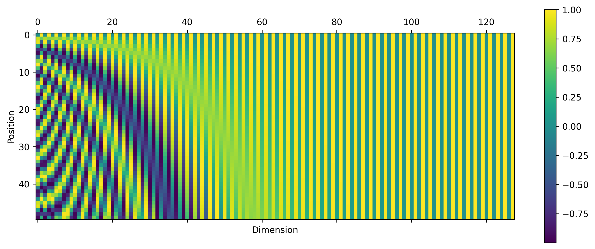
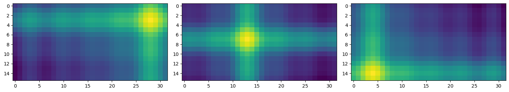
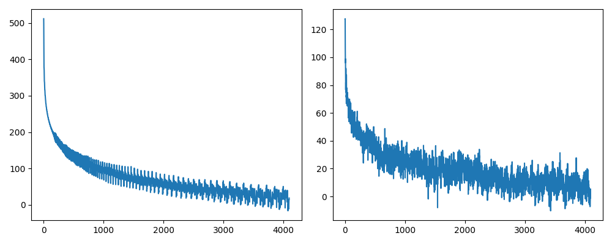

Transformer's Positional Encoding
简介
众所周知，Transformer 中的注意力机制并不区分各个 token 的顺序，是置换不变的，因此在需要明确 token 顺序的场景下，我们必须人为地在 token 中注入位置信息，这就是位置编码 (positional encoding / embedding) 的作用。一般认为，理想的位置编码应该尽可能满足下列性质：
- 唯一性：每个位置都配备唯一的编码；
- 相对性：两个位置编码之间存在只与相对位置有关、与绝对位置无关的关系式；
- 外推性：模型能够直接泛化到比训练序列长度更长的情形下；
- 远程衰减性：随着两个位置之间的距离变大，它们位置编码的相似度变小。
可学习位置编码
最直接的想法就是让模型自己学习位置编码。设 \(\{\mathbf x_i\}_{i=0}^{N-1}\) 表示 token 序列的 embedding，其中 \(\mathbf x_i\in\mathbb R^d\) 表示第 \(i\) 个位置的 \(d\) 维词嵌入向量。可学习位置编码首先用 nn.Embedding() 初始化 \(N\) 个 \(d\) 维向量 \(\{\mathbf p_i\}_{i=0}^{N-1}\)，然后与对应位置的 embedding 相加，送给 Transformer 训练： \[
\mathbf x_i\gets\mathbf x_i+\mathbf p_i
\] 可学习位置编码原理简单，实现方便，但是缺点也很明显：一是位置编码是模型隐式地学习出来的，因此不能保证具有相对性和远程衰减性；二是位置编码的数量固定为训练时设置的数量，因此无法在测试时外推到更长的序列上。
在视觉领域，ViT 就是用的可学习位置编码。下图展示了预训练的 ViT 中可学习位置编码互相之间的 cosine 相似度：

可以看见，模型确实学习到了合理的位置编码——距离越近，编码相似度越高。另外，由于图像数据是 2D 的，上图还显现出了有趣的行结构与列结构，也证明了可学习位置编码的有效性。
Sinusoidal 位置编码
基本形式
Sinusoidal 位置编码依然是直接加在 embedding 序列上，但有着特别的设计： \[ \begin{align} p_{i, 2j} = \sin\left(\frac{i}{10000^{2j/d}}\right),\quad p_{i, 2j+1} = \cos\left(\frac{i}{10000^{2j/d}}\right) \end{align} \] 其中 \(p_{i,k}\) 表示 \(\mathbf p_i\) 的第 \(k\) 个分量。这个式子看起来有点抽象，我们不妨可视化一下：

图中共有 50 个位置编码，每个编码是 128 维的向量。第 \(i\) 行代表位置编码 \(\mathbf p_i\) 这个向量，第 \(k\) 列代表所有位置编码在第 \(k\) 维上的取值。可以看见，对于第 \(k=2j\) 或 \(k=2j+1\) 维，各位置编码在这一维度上连起来形成一条周期为 \(2\pi\cdot 10000^{2j/d}\) 的正弦/余弦曲线。例如：
- 当 \(j=0\) 时，曲线周期为 \(2\pi\)，即上图第一列形成一条周期为 \(2\pi\) 的正弦曲线；
- 当 \(j=d/2\) 时，曲线周期为 \(20000\pi\)，即上图最后一列形成周期为 \(20000\pi\) 的余弦曲线。不过此时周期太大，所以看不出变化。
可见，sinusoidal 位置编码的设计思路与二进制编码非常像——低位周期小频率高、高位周期大频率低，因此在某种程度上，sinusoidal 位置编码可以看作是二进制编码的连续化。
几个问题
针对 sinusoidal 位置编码的设计方式，还有几点疑惑有待回答：
- 为什么既要用 \(\sin\)，又要用 \(\cos\)？
- 为什么周期要设计为指数函数的形式？
- 为什么指数函数的底数是 10000？
对于第一个问题，答案是这样设计使得 sinusoidal 位置编码具有相对性。具体而言，考虑位置偏移量 \(\delta\)，有： \[ \begin{bmatrix}p_{i+\delta,2j}\\p_{i+\delta,2j+1}\end{bmatrix}=\begin{bmatrix}\cos(\delta\omega_j)&\sin(\delta\omega_j)\\-\sin(\delta\omega_j)&\cos(\delta\omega_j)\end{bmatrix} \begin{bmatrix}p_{i,2j}\\p_{i,2j+1}\end{bmatrix} \] 其中 \(\omega_j=1/10000^{2j/d}\). 完整写出来就是： \[ \mathbf p_{i+\delta}=\begin{bmatrix} \cos(\delta\omega_0)&\sin(\delta\omega_0)&&&\\ -\sin(\delta\omega_0)&\cos(\delta\omega_0)&&&\\ &&\ddots\\ &&&\cos(\delta\omega_{d/2-1})&\sin(\delta\omega_{d/2-1})\\ &&&-\sin(\delta\omega_{d/2-1})&\cos(\delta\omega_{d/2-1})\\ \end{bmatrix}\mathbf p_i \] 可见 \(\mathbf p_{i+\delta}\) 可以由 \(\mathbf p_i\) 经过线性变换得到，且该变换只与相对位置 \(\delta\) 有关，与绝对位置 \(i\) 无关。更具体地说，这个线性变换是每两维一组的旋转变换。如果只用 \(\sin\) 或只用 \(\cos\)，就没有这样的相对关系了。当然，\(\sin\) 与 \(\cos\) 不必按奇偶位置交替放置，也可以前一半放 \(\sin\)，后一半放 \(\cos\).
对于第二个问题，个人倾向于认为这只是作者的经验性选择，没有什么特别的道理，也许线性形式或者多项式形式都是可行的。
对于第三个问题，根据我们前面的讨论，可以知道底数与最大周期有关——若底数为 \(B\)，则最大周期为 \(2B\pi\). 可以肯定的是，\(B\) 应该足够大以保证最大周期能够覆盖序列长度，否则可能出现两个位置有相同（或相近）的位置编码，违反唯一性。但是 \(B=10000\) 意味着最大周期为 \(20000\pi\approx62\text{k}\)，显然远远大于当年（论文发表于 2017 年）实际需要的序列长度，为什么不选小一些的数呢？这个问题我还没有确切的答案。有人认为，位置编码与 token embedding 相加会干扰 token embedding 中的信息，而底数 10000 让位置编码的后半部分基本相同而变得无用，正好为 token embedding 留下了空间。
参考实现
在视觉生成领域，sinusoidal 位置编码被广泛应用于编码扩散模型的时间步，PyTorch 参考实现如下：
1 | |
Sinusoidal 位置编码也常被应用于编码图像坐标，此时可以将其扩展为 2D 形式。具体而言，我们将位置编码的维度拆成两半，前一半编码纵坐标（图像的高）、后一半编码横坐标（图像的宽）即可，参考实现如下：
1 | |
我们可以快速验证一下 2D sinusoidal 位置编码的相关性。下面的代码片段计算了一个高 16、宽 32 的图像的位置编码，随机选择了三个位置计算与其他所有位置的点积相似度，并作图可视化：
1 | |

可以看见距离越近的位置编码相似度越高，这在一定程度上说明了 2D sinusoidal 位置编码的合理性。
RoPE 旋转位置编码
RoPE 是当前 LLM 的默认选择，以绝对位置编码的形式实现了相对性，由苏神在他的博客和论文 Roformer 中提出。
基本形式
上文介绍的可学习和 sinusoidal 位置编码都是直接加在 token embeddings 上送给 Transformer，并没有考虑这些 token 后续是如何交互的。而 RoPE 则显式地考虑了 token 在 attention 机制中的内积运算，得到了一个更为优雅的解。
首先考虑二维情形，对于 \(\mathbf x\in\mathbb R^2\) 及 \(m\in\mathbb R\)，定义 RoPE 操作为： \[ \text{RoPE}(\mathbf x,m)=\begin{bmatrix}\cos(m\theta)&-\sin(m\theta)\\\sin(m\theta)&\cos(m\theta)\end{bmatrix}\begin{bmatrix}x_0\\x_1\end{bmatrix}=\mathcal R_m\mathbf x \] 其中 \(\mathcal R_m\) 是一个旋转矩阵，将 \(\mathbf x\) 逆时针旋转 \(m\theta\) 的角度，其中 \(\theta\) 是一个超参数。在计算 attention 时，取位置 \(m,n\) 上的 \(\mathbf q,\mathbf k\)，分别实施 RoPE 操作，再做内积得： \[ \begin{align} \Big\langle\text{RoPE}(\mathbf q,m),\text{RoPE}(\mathbf k,n)\Big\rangle &=\mathbf q^{\mathsf T}\mathcal R_m^{\mathsf T}\mathcal R_n\mathbf k=\mathbf q^{\mathsf T}\mathcal R_{n-m}\mathbf k \end{align} \] 基于旋转矩阵的良好性质 \(\mathcal R_m^{\mathsf T}\mathcal R_n=\mathcal R_{n-m}\)，可以看见内积结果只与相对位置 \(n-m\) 有关，这体现出了 RoPE 的相对性。
对于 \(d\) 维情形（\(d\) 是偶数），与 sinusoidal 类似，只需将二维情形拼接起来即可： \[ \text{RoPE}(\mathbf x,m)=\begin{equation}\begin{bmatrix} \cos(m\theta_0) & -\sin(m\theta_0) &&\\ \sin(m\theta_0) & \cos(m\theta_0) &&\\ && \ddots &&\\ &&&\cos (m\theta_{d/2-1}) & -\sin (m\theta_{d/2-1}) \\ &&&\sin (m\theta_{d/2-1}) & \cos (m\theta_{d/2-1}) \\ \end{bmatrix} \begin{bmatrix}x_0 \\ x_1 \\ \vdots \\ x_{d-2} \\ x_{d-1}\end{bmatrix}\end{equation}=\mathcal R_m\mathbf x \] 其中 \(\theta_0,\ldots,\theta_{d/2-1}\) 是超参数，沿用 sinusoidal 位置编码的设计，一般选取 \(\theta_j=10000^{-2j/d}\).
实现时，由于旋转矩阵 \(\mathcal R_m\) 非常稀疏，所以不会用矩阵乘法，而是改写为如下形式： \[ \text{RoPE}(\mathbf x,m)=\begin{bmatrix}x_0\\x_1\\\vdots\\x_{d-2}\\x_{d-1}\end{bmatrix}\odot\begin{bmatrix} \cos(m\theta_0)\\\cos(m\theta_0)\\\vdots\\\cos(m\theta_{d/2-1})\\\cos(m\theta_{d/2-1}) \end{bmatrix}+\begin{bmatrix}-x_1\\x_0\\\vdots\\-x_{d-1}\\x_{d-2}\end{bmatrix}\odot\begin{bmatrix} \sin(m\theta_0)\\\sin(m\theta_0)\\\vdots\\\sin(m\theta_{d/2-1})\\\sin(m\theta_{d/2-1}) \end{bmatrix}\qquad\text{(GPT-J style)} \] 其中 \(\odot\) 表示逐元素乘积。这种相邻两个维度为一组配对的形式被称作 GPT-J style. 有时为了实现方便，人们会将前一半维度与后一半维度两两配对，这种形式称作 GPT-NeoX style： \[ \text{RoPE}(\mathbf x,m)=\begin{bmatrix}x_0\\x_1\\\vdots\\x_{d/2-1}\\x_{d/2}\\\vdots\\x_{d-2}\\x_{d-1}\end{bmatrix}\odot\begin{bmatrix} \cos(m\theta_0)\\\cos(m\theta_1)\\\vdots\\\cos(m\theta_{d/2-1})\\\cos(m\theta_0)\\\cos(m\theta_1)\\\vdots\\\cos(m\theta_{d/2-1}) \end{bmatrix}+\begin{bmatrix}-x_{d/2}\\-x_{d/2+1}\\\vdots\\-x_{d-1}\\x_{0}\\x_{1}\\\vdots\\x_{d/2-1}\end{bmatrix}\odot\begin{bmatrix} \sin(m\theta_0)\\\sin(m\theta_1)\\\vdots\\\sin(m\theta_{d/2-1})\\\sin(m\theta_0)\\\sin(m\theta_1)\\\vdots\\\sin(m\theta_{d/2-1}) \end{bmatrix}\qquad\text{(GPT-NeoX style)} \] 两种 style 本质上没有区别，但是计算结果肯定不同，因此有时做模型间权重转换的时候需要留意一下。
可以看见，RoPE 其实和 sinusoidal 位置编码有很多相似之处，只不过 sinusoidal 是加式编码，而 RoPE 是乘式编码。乘式编码结合 attention 中的内积运算，使得 RoPE 自然而然地展现出了相对性，比 sinusoidal 位置编码更加显式和优雅。
参考实现（复数）
由于二维平面上的旋转可以视为复平面上的乘法，所以我们可以用复数来实现 RoPE. 具体而言，首先把 \(\mathbf x\in\mathbb R^d\) 沿维度两两成组，转换为复数向量： \[ \mathbf x=\begin{bmatrix}x_0\\x_1\\\vdots\\x_{d-1}\end{bmatrix}\in\mathbb R^d \;\longrightarrow\; \hat{\mathbf x}=\begin{bmatrix}x_0+ix_1\\x_2+ix_3\\\vdots\\x_{d-2}+ix_{d-1}\end{bmatrix}\in\mathbb C^{d/2} \] 那么 RoPE 操作可以改写为： \[ \text{RoPE}(\hat{\mathbf x},m)=\begin{bmatrix}x_0+ix_1\\x_2+ix_3\\\vdots\\x_{d-2}+ix_{d-1}\end{bmatrix}\odot\begin{bmatrix} e^{im\theta_0}\\e^{im\theta_1}\\\vdots\\e^{im\theta_{d/2-1}} \end{bmatrix}\in\mathbb C^{d/2} \] 其中 \(\odot\) 表示逐元素的复数乘法。计算完毕后再把复数的实部和虚部拆开 reshape 回 \(\mathbb R^d\) 即可。PyTorch 参考代码如下：
1 | |
1 | |
我们可以快速验证一下 RoPE 的远程衰减性。下面的代码片段针对全 1 以及 \([0,1]\) 之间的随机 query 和 key 向量分别施加 RoPE，并可视化其点乘结果关于相对距离的关系：
1 | |

可以看到 RoPE 具有远程略带震荡的衰减性。
参考资料
- Vaswani, Ashish, Noam Shazeer, Niki Parmar, Jakob Uszkoreit, Llion Jones, Aidan N. Gomez, Łukasz Kaiser, and Illia Polosukhin. Attention is all you need. Advances in neural information processing systems 30 (2017). ↩︎
- Dosovitskiy, Alexey, Lucas Beyer, Alexander Kolesnikov, Dirk Weissenborn, Xiaohua Zhai, Thomas Unterthiner, Mostafa Dehghani et al. An image is worth 16x16 words: Transformers for image recognition at scale. arXiv preprint arXiv:2010.11929 (2020). ↩︎
- Su, Jianlin, Murtadha Ahmed, Yu Lu, Shengfeng Pan, Wen Bo, and Yunfeng Liu. Roformer: Enhanced transformer with rotary position embedding. Neurocomputing 568 (2024): 127063. ↩︎
- 苏剑林. (Feb. 03, 2021). 《让研究人员绞尽脑汁的Transformer位置编码 》[Blog post]. Retrieved from https://spaces.ac.cn/archives/8130 ↩︎
- 苏剑林. (Mar. 08, 2021). 《Transformer升级之路：1、Sinusoidal位置编码追根溯源 》[Blog post]. Retrieved from https://www.spaces.ac.cn/archives/8231 ↩︎
- 苏剑林. (Mar. 23, 2021). 《Transformer升级之路：2、博采众长的旋转式位置编码 》[Blog post]. Retrieved from https://spaces.ac.cn/archives/8265 ↩︎
- BERT为何使用学习的position embedding而非正弦position encoding? - 纳米酱的回答 - 知乎 https://www.zhihu.com/question/307293465/answer/1028613658 ↩︎
- Amirhossein Kazemnejad. Transformer Architecture: The Positional Encoding. https://kazemnejad.com/blog/transformer_architecture_positional_encoding/ ↩︎
- Timo Denk. Linear Relationships in the Transformer’s Positional Encoding. https://blog.timodenk.com/linear-relationships-in-the-transformers-positional-encoding/ ↩︎
- Alibi位置向量外推性：看起来很长其实还是短. https://developer.aliyun.com/article/842370 ↩︎
- EleutherAI. Rotary Embeddings: A Relative Revolution. https://blog.eleuther.ai/rotary-embeddings/ ↩︎
- 十分钟读懂旋转编码（RoPE）. https://www.zhihu.com/tardis/bd/art/647109286 ↩︎
- RoPE的远距离衰减 - Linsight的文章 - 知乎 https://zhuanlan.zhihu.com/p/705492804 ↩︎